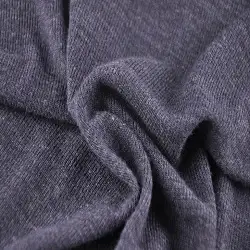

Джерсі
З’явився на острові Джерсі у проливі Ла-Манш. Місцеві мешканці виготовляли тканину з овечої вовни для пошиву теплої нижньої білизни. Спроби розширити виробництво та продавати спортивний одяг з вовняного трикотажу виявилися невдалими. Пізніше на джерсі звернула увагу Коко Шанель.
Розробивши колекцію одягу з цього матеріалу, вона створила скандальний прецедент з “нецільовим” використанням такого трикотажу. Зараз тканина джерсі надзвичайно популярна і вже виробляється не лише з вовни, а й з бавовни, льону, віскози, бамбука та поліестеру. Не менш широка й сфера її застосування – від натільної білизни до костюмів та пальт.
Джерсі не любит високих температур, але спокійно переносить відсутність прасування, й не витягується при носінні.